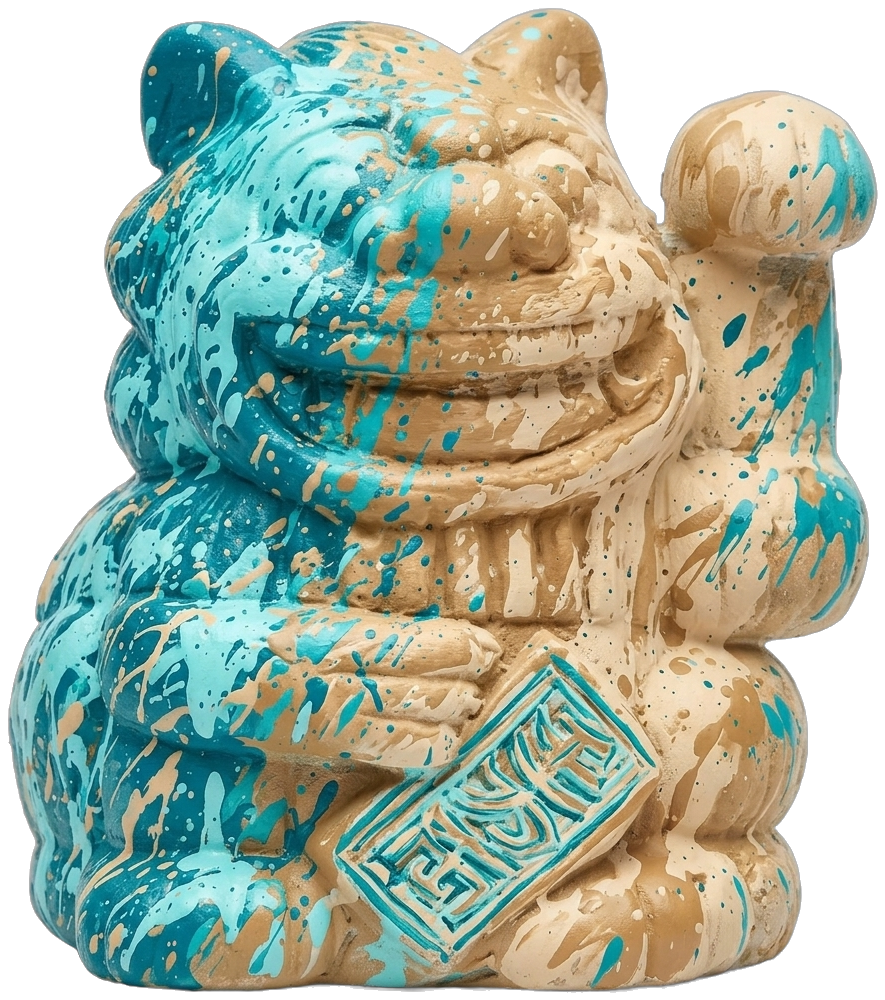
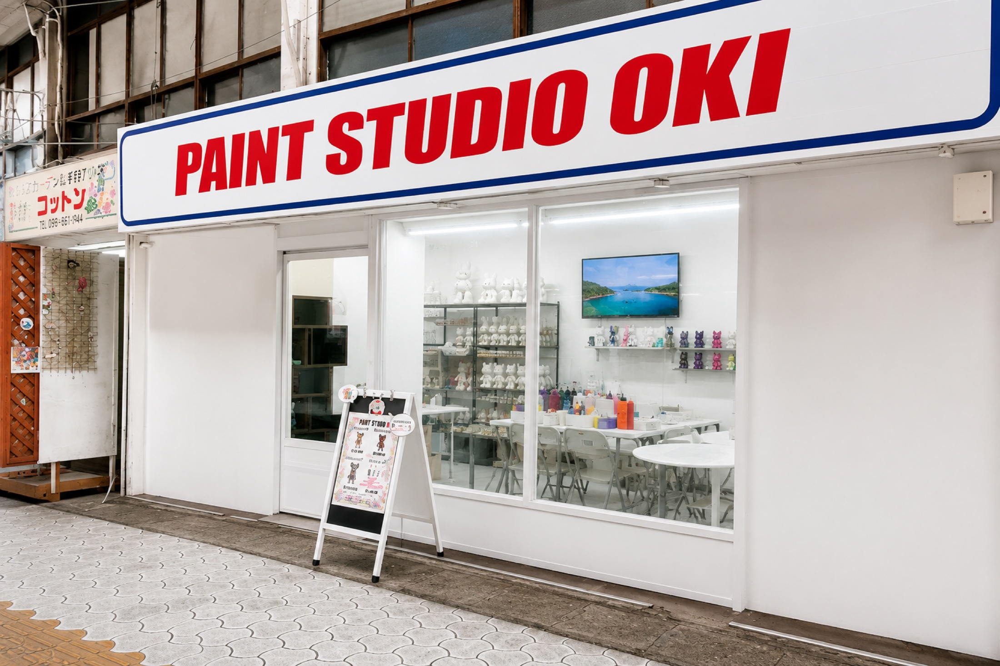

01私たちについて
ひとつの場所に、
五つの顔。
PAINT STUDIO OKINAWA は、アートギャラリーであり、アーティストのアトリエであり、デザインショップであり、創作スタジオであり、ショールームでもあります。沖縄の海、太陽、亜熱帯の緑、白い砂——島のすべてから色をいただき、ひとつずつ手仕事で作品に変えていきます。
- 壱ギャラリーGALLERY
- 弐アトリエATELIER
- 参ショップDESIGN SHOP
- 四スタジオSTUDIO
- 五ショールームSHOWROOM
色を待つ、白いかたちたち。
ここから、あなただけの一体がはじまる。

沖縄のアートを、この手で。
島の心を宿した、ひとつだけの作品。
02あなたの一体
想像力を、
解き放とう。
これは、当スタジオで生まれた一体のイメージ。ドラッグしてまわして、360°からご覧ください。色も、柄も、輝きも——決めるのは、あなたの手です。
03体験
まっしろから、
はじめよう。
まっ白なフィギュアをひとつ選んで、色を垂らして、筆をすべらせて。決まりはありません。うまい・へたも、ありません。旅の思い出に、雨の日の過ごし方に、大切な人との時間に。仕上がった一体は、世界にひとつだけの作品です。ご来店は予約制です。
- 旅の思い出に
- カップル・ご家族で
- 雨の日のプランに
- はじめてでも安心
- 日本語・英語OK
- ご予約はこちら→

04工房
すべては、
この場所で。
真っ白なフィギュアが、色をまとって作品になる。企画から彩色、仕上げまで——ひとつずつ、この松尾のアトリエで生まれます。地元の手仕事だからこそ宿る、機械にはつくれない揺らぎと温もりを大切にしています。